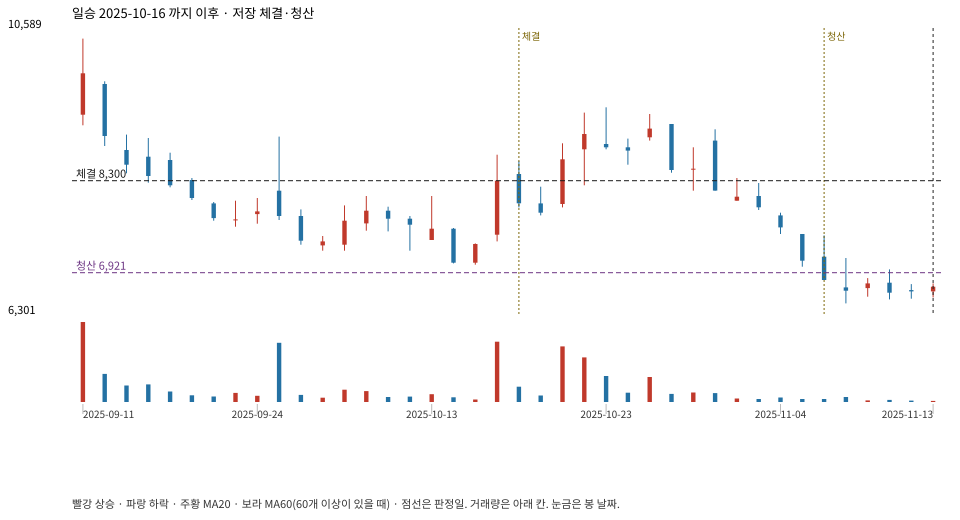

계좌를 다시 돌리지 않았다. 아래는 저장된 주문·체결·청산·비용·손익이다.

{
"case_id": "1b43b3fa0a18d94a",
"status": "closed",
"trade": {
"symbol": "333430.KQ",
"signal_date": "2025-10-16",
"quantity": 732,
"entry": 8300,
"stop": 6924,
"target": 10430,
"planned_risk": 1020907.6178159993,
"reserved_cash": 6081675.6,
"fill": {
"date": "2025-10-17",
"price": 8300,
"fee": 6075.6
},
"exit": {
"date": "2025-11-06",
"price": 6920.538,
"reason": "stop",
"net_pnl": -1020907.6178160002,
"ambiguous_bar": false
}
},
"cost": "research fee 10bp each side, slippage 5bp; amounts below are the stored ledger, not a new run",
"chart": "c\/1b43b3fa0a18d94a.svg"
}